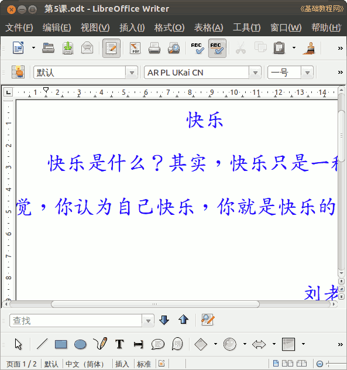

2012-2013 第二学期七年级文字处理和网页教学设计
作者：TeliuTe 来源：基础教程网
五、空白和对齐 返回目录 下一课
（一）教学设计
1、学习目标：空白和对齐
2、注意事项：按步骤操作
3、教学过程：
1）教师准备学案和板书；
2）学生整队进入，开机抄黑板上笔记；
3）教师讲解板书演示操作；
4）学生打指法、日志、完成操作；
5）教师打勾记录学生指法成绩，检查日志和操作；
注：学生抄完笔记就开始打指法、日志，老师讲完后再继续完成；
（二）板书设计(学生笔记)
第5课 空白和对齐
1.空白时光标点不进去的地方。
2.居中对齐用于标题，两边空白。
3.左对齐用于正文部分。
4.右对齐用于签名日期。
==
操作指南
快乐
快乐是什么？其实，快乐只是一种感觉，你认为自己快乐，你就是快乐的人。
刘老师
2013.3.12
操作图示：

（三）课后记 2013-3-12 15:50
--
做不出来肯定是有原因，比如笔记没认真抄
讲解的时候去说话，干别的事情或者根本不动脑筋学
--
有的用空格来排版，有的是标题漏了不会补的
再有把内容全部删除不会撤消的
--
4班新标签缺少很多，检查的时候费时间
需要提醒下把哪些找出来准备好
--
光想着玩，完成任务就可以做自己的事情
把上一节课的内容过一遍，这样每节课学的时候要记一下
--
指法低头的键盘摸不住键的，提醒下每节课
一忙起来就想不到这些细节内容
--
操作的时候，按照笔记上一步一步来
防止一下全都设成居中， 做哪个选哪个
--
下午1班住校生不知弄什么，上着课就来说让去宿舍
课前课间弄也可以嘛，非得赶在上课
返回目录 下一课
本教程由86团学校TeliuTe制作|著作权所有
基础教程网：http://teliute.org/
美丽的校园……
转载和引用本站内容，请保留作者和本站链接。